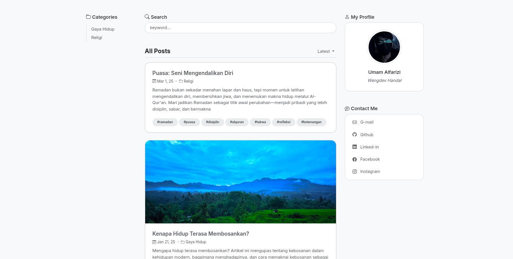

Wengdev Handal.
Seorang perajin digital yang mencoba mengembangkan aplikasi berbasis web.
$
Proyek Unggulan
Beberapa proyek yang mungkin menarik untuk anda lihat.

APLIKASI WEB
Blog Personal Minimalis
Sebuah website blog yang didesain bersih dan minimalis untuk personal tapi juga bisa multi pengguna (Autentikasi)
Javascript
(ES6+)
Express.js
EJS View Engine
Bootstrap
MongoDB

APLIKASI WEB
Peduli Bersama
Platform donasi online yang bertujuan untuk menjadi jembatan antara para donatur dan mereka yang membutuhkan.
PHP
Laravel
Bootstrap
TailwindCSS
MySQL
Dari Blog Saya
Cuplikan pemikiran dan tulisan terbaru.